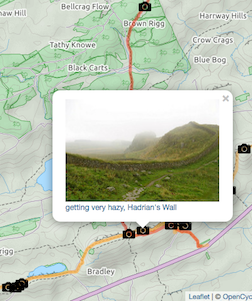

Using the Flickr API from R
Jul 3, 2016RFlickrLeaflet
There used to be an Rflickr package, but it no longer seems to work. It was last updated in 2011. I had a lot of trouble googling information on how to access Flickr from R. This example really got me started. It is doing very different things that what I wanted to do, so it may be more useful than what I am laying out here, depending on your goal.
To see where all this is leading, go to my Shiny app which displays souvenirs of my walks. Click on a camera icon and you will see a thumbnail photo from Flickr in a popup. Click on the popup, and you will be taken to the full-sized photo in Flickr. To the right is a screenshot of the app showing a popup photo of Hadrian’s Wall. The GPS traces are in orange and red (for two different days).
Before you can get flickr data into R via their web API, you will need to sign up for a key. You will get a user_id and an api_key.
I save the user_id and api_key in a file that I load before executing the calls to the API. That way I am not showing the api_key in my code. In the examples below, these are loaded from flickr_values.RData.
The gateway to information about accessing Flickr data is via The App Garden page at Flickr. From that page you can go to the documentation for each call to the API. At the bottom of each documentation page there should be an API Explorer that takes you to a page that lets you try out the API call. See photosets.getList as an example. The API Explorer is a huge help and a great tool.
Here’s the code for an R function that will get a list of photosets (or albums):
library(httr)
library(jsonlite)
load(file = "flickr_values.RData") # to get user_id and api_key for Flickr calls
# test: an_album <- flickr_photosets_getlist(api_key, user_id)
flickr_photosets_getlist <- function(the_api_key = api_key, the_user_id = user_id) {
# flickr_photosets_getlist returns a data.frame with info on the albums.
xx <- GET(url=sprintf(
"https://api.flickr.com/services/rest/?method=flickr.photosets.getList&api_key=%s&user_id=%s&format=json&nojsoncallback=1"
, the_api_key
, the_user_id
)
) %>% content(as = "text") %>%
fromJSON() # check that xy$stat == "ok"
if (xx$stat != "ok") return(xx$stat)
albums <- xx$photosets[[5]]
return(albums)
}
I get a message that says “No encoding supplied: defaulting to UTF-8.” Based on some googling, I think that’s from the GET call (from httr). I think this will disappear with a future version of httr.
Now that we have a data.frame that describes the albums, we can go on to get info about the photos in that album. (Remember that a photoset in the lingo of the API corresponds to an album in the terms used by the main Flickr site.)
#test: xx <- flickr_photosets_getphotos(the_photoset_id = "72157657606414684")
flickr_photosets_getphotos <- function(the_photoset_id = NULL,
time_start = NULL,
time_end = NULL,
the_api_key = api_key,
the_user_id = user_id) {
# returns data.frame of photos including datetaken, latitude, longitude,
# url_m, height_m, width_m and url_s, height_s, height_m
xx <- GET(url=sprintf(
"https://api.flickr.com/services/rest/?method=flickr.photosets.getPhotos&api_key=%s&photoset_id=%s&user_id=%s&extras=%s&format=json&nojsoncallback=1"
, the_api_key
, the_photoset_id
, the_user_id
, "description,date_taken,geo,url_m,url_s"
)
) %>% content(as = "text") %>%
fromJSON() # check that xx$stat == "ok"
if (xx$stat != "ok") {
print(paste("Flickr error", code, message))
return(xx$stat)
}
# description gets returned as a data.frame. I'm not sure why. so get _content
xx$description <- xx$description[ ,"_content"]
xx$photoset$photo$datetaken <- ymd_hms(xx$photoset$photo$datetaken)
xx$photoset$latitude <- as.numeric(xx$photoset$latitude)
xx$photoset$longitude <- as.numeric(xx$photoset$longitude)
xx$photoset$photo$latitude <- ifelse(xx$photoset$photo$latitude != 0, xx$photoset$photo$latitude, NA)
xx$photoset$photo$longitude <- ifelse(xx$photoset$photo$longitude != 0, xx$photoset$photo$longitude, NA)
if (is.null(time_start) & is.null(time_end)) return(xx$photoset$photo)
filter(xx$photoset$photo, is.null(time_start) | (datetaken >= time_start), is.null(time_end) | (datetaken >= time_end))
}
What I wanted from Flickr was to be able to show a thumbnail version of a photo to add to a marker on a Leaflet map and then send the person to the photo at the Flickr site if the viewer clicked on the thumbnail.
The Flickr API constructs URL’s that fetch small or medium sized version of the photo.
Here is a facsimile of the code I used to add markers to the Leaflet map.
# produce a Flickr URL like the following:
# https://www.flickr.com/photos/99418994@N00/22042568849/in/album-72157657606414684/
photos_in_album_url <- function(album_id, photo_id, user_id) {
sprintf("https://www.flickr.com/photos/%s/%s/in/album-%s/",
user_id,
photo_id,
album_id)
}
add_photos_to_map <- function(photos_df, a_map = null) {
if (is.null(a_map)) {
a_map <- leaflet(height = "700px", width = NULL) %>%
addProviderTiles("Thunderforest.Landscape", group = "Topographical") %>%
addProviderTiles("Esri.WorldImagery", group = "Satellite") %>%
addProviderTiles("OpenStreetMap.Mapnik", group = "Road map")
}
photos_df <- filter(photos_df, !is.na(lng), !is.na(lat), include) # include == TRUE for the photos I want to add.
# photo_in_album is created by photos_in_album_url().
# e.g., xx$trip_photos$photo_in_album <- map2_chr(xx$trip_photos$album_id, xx$trip_photos$id, photos_in_album_url, user_id) (using the purrr package that is part of the Hadleyverse)
a_map <- addMarkers(m, lng=photos_df$lng, lat= photos_df$lat,
popup = sprintf("<a href=\"%s\ \" target=\"_blank\">
<IMG SRC=\"%s\" ALT=\"%s\" WIDTH=%s HEIGHT=%s>%s </a>",
photos_df$photo_in_album,
photos_df$url_s,
"Click to go to photo in Flickr",
photos_df$width_s,
photos_df$height_s,
photos_df$description),
icon = photoIcon, # function providing custom marker-icons
group='Photo markers')
a_map
}
I used these calls to add photo markers a Leaflet map showing souvenirs of my walking holidays. You can see the results here.